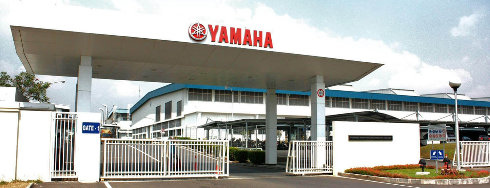

| Sejarah | Perawatan Motor Matic | Perawatan Motor Kopling | Gallery | Contact |
|---|
Sejarah Yamaha Motor indonesia Yamaha Motor Indonesia merupakan sebuah perusahaan yang bergerak di bidang industri otomotif, tepatnya produksi sepeda motor yang kemudian didistribusikan ke berbagai delaer resmi yamaha. Perusahaan ini berdiri pada 6 Juli 1974. Sebelum perusahaan ini hadir, awalnya Indonesia hanya melakukan perakitan motor yamaha saja dimana komponennya didatangkan dari Jepang. Yamaha Motor Indonesia Manufacturing atau disingkat YIMM sendiri merupakan perusahaan terkemuka di Indonesia dengan induk perusahaannya adalah yamaha Motor Company yang bermarkas di Iwata, Shizuoka, Jepang. Profil dan Sejarah Yamaha Motor Indonesia Manufacturing (YIMM)YIMM merupakan produsen sepeda motor sekaligus suku cadangnya. Awalnya, Perusahaan ini berlokasi di Pulo Gadung, Jakarta Timur. Guna menunjang operasional perusahaan, maka YIMM merambah ke lokasi baru untuk kegiatan produksi, yaitu di Karawang, Jawa Barat. Sebelum mulai memproduksi sepeda motor sendiri, pabrik Yamaha di Indonesia menjalankan kegiatan perakitan pada tahun 1969. Semua komponennya diimpor dari Jepang. Proses kegiatan perakitan ini dilakukan secara manual dengan tenaga kerja yang sedikit. Produk Awal Mereka Awalnya Adalah 10 Unit Perhari. Untuk Saat Ini, YIMM Memiliki Ribuan Karyawan Dengan Produksi Masal Yang Diekspor Ke Beberapa Negara Termasuk Thailand, China Dan Berbagai Negara Lainnya Visi dan Misi YIMM sebagai Landasan PerusahaanSeperti halnya perusahaan lain, YIMM memiliki visi misi untuk mampu mencapai tujuan perusahaannya. Dengan landasan tersebut, maka bisa sekaligus menunjukkan budaya kerja perusahaan. YIMM memiliki visi untuk menjadi produsen sepeda motor yang paling depan di Indonesia. Perusahaan ini juga memiliki visi untuk menciptakan masyarakat yamaha yang sejahtera dan loyal guna mencapai perkembangan bisnis yang sehat dan berkelanjutan. Hal ini diwujudkan dengan memberikan pengalaman yang menyenangkan bagi pelanggan dan mudahnya akses pelayanan dan produk dengan standar kualitas dunia. Yamaha juga didukung dengan sumber daya yang handal serta menggunakan teknologi terdepan yang tepat guna. Selain itu, Yamaha memiliki sistem bisnis yang berfokus pada pelanggan. Untuk mencapai visi di atas, maka YIMM memiliki misi berupa menyediakan produk dengan mutu tinggi, inovasi terus menerus dengan harga terjangkau serta dpastikan merupakan pilihan pembeli. Yamaha akan terus meningkatkan kompetensi karyawan, teknilogi serta proses teknologinya. Prestasi YIMM Pada Produk dan Produksi Sepeda MotorProduk sepeda motor dari Yamaha dapat bersaing di Indonesia dan memiliki peminat yang tinggi dari berbagai kalangan. Berbagai produk manufacturing ini adalah : Mio series, Soul GT, X-Ride, Jupiter series, Vega Z, hingga Byson. Selain Di Indonesia, Pabrikan Yamaha Juga Tersebar Ke Berbagai Negara Di Dunia. Yamaha Menjadi Salah Satu Merk Yang Menonjol Dan Banyak Digunakan Untuk Mobilitas Masyarakat. Penjualan produk Yamaha sendiri sangat tinggi. Hal ini bisa dilihat pada tahun 2009 lalu dimana Yamaha berhasil mengalahkan angka penjualan kumulatif tahunan Honda sebagai kompetitornya. Produsen asal Jepang, Yamaha di tahun tersebut mampu menggeser tradisi Honda sebagai pemimpin dalam penjualan sepeda motor di Indonesia. Banyak Deretan Prestasi YIMM Yang Telah Dicapai Selama Ini. Salah Satu Yang Bisa Disebutkan Adalah Pada Akhir Tahun 2009, Yamaha Tercatat Menjadi Raja Motor Nasional Dengan Total Penjualan Mencapai 2.678.892 Unit. Dengan Angak Tersebut, Maka Yamaha Berhasil Memperoleh 46% Dari Total Market Share Di Indonesia. |
||
|